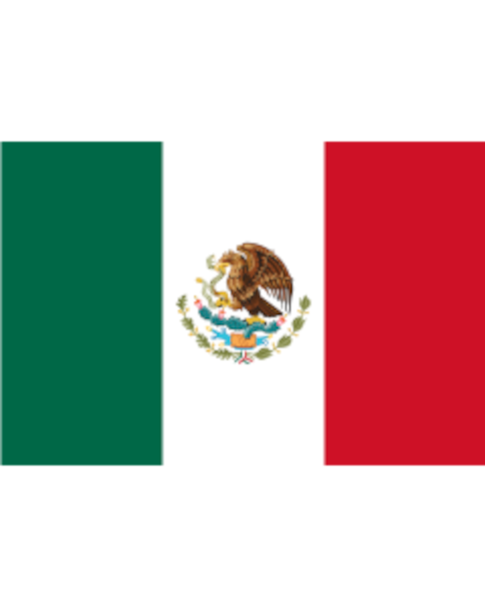

En México, septiembre es conocido como el Mes Patrio. Durante estas semanas se conmemora el inicio de la lucha por la Independencia del país, un proceso histórico que comenzó la madrugada del 16 de septiembre de 1810 con el famoso "Grito de Dolores" encabezado por el cura Miguel Hidalgo y Costilla.
Significado de los Colores Patrios
Los colores de la bandera nacional forman parte de la identidad e historia de la nación:
- Verde: Representa la esperanza del pueblo en el destino de su patria.
- Blanco: Simboliza la unidad y la pureza de los ideales mexicanos.
- Rojo: Representa la sangre derramada por los héroes que lucharon por la libertad.
